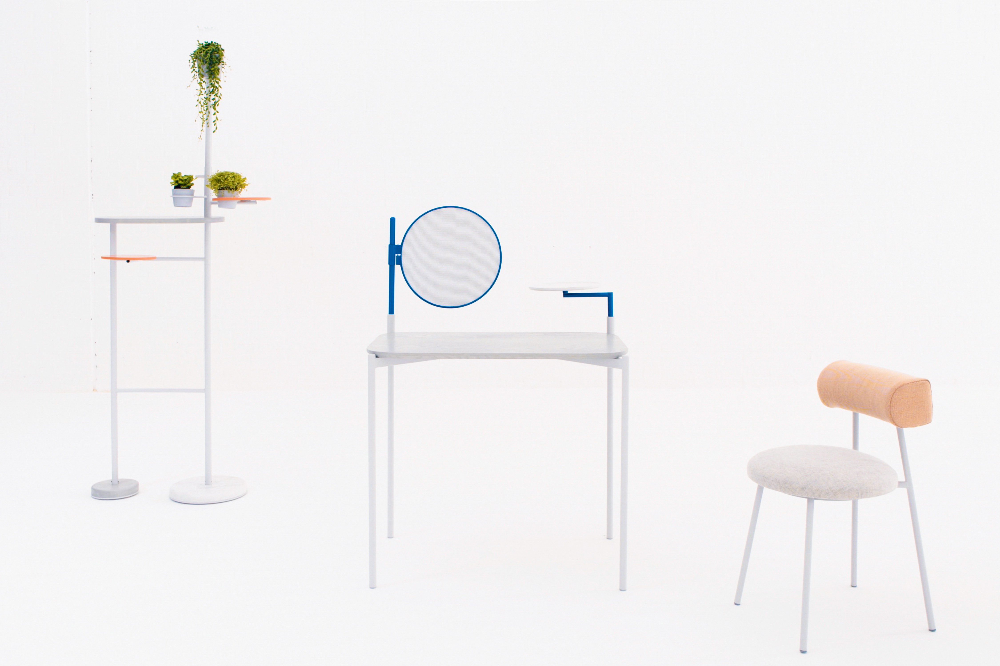

#dearLondon for TfL
2017
ash, steel, wool, polyester
A set of apparatus that supports the changing needs of mobile workers
BACKGROUND
Landing Space is about the changing landscape of work culture. The advancement of mobile devices and digital technology has opened the door to a workplace, where people can perform a variety of tasks in all different kind of settings. While this recent development in mobile technology originated only 6 years ago, it has completely transformed the working environment and modern working landscape cannot keep up. With this flexible in time and place, it is crucial to provide people with the right space that suit their needs and tasks.
PROJECT
Landing Space is a set of apparatus that aims to satisfy the changing needs of mobile workers in in-between spaces: cafes, co-working spaces and meeting areas where private and public domain converge. The set consists of a Screen Table, One a half chair and Charging Tree; each serving different functions in the space.
The key element to well being in a space is a space that encourages connection, supports variety of workstyles and allowing people freely to move around.
Redefining ‘in between’ spaces
where people temporarily take ownership of the space, form relationships and interact with the changing environment.


Screen table
Focus, work and organise
Screen Table is a modular and highly flexible work table, where each components can be adjusted according to different tasks and needs. The screen can be removed or inserted over a different table leg so that worker can focus on their own task or share when they need to. The small tray helps keep personal belonging and workspace organised when on the go.


One and a half chair
Support, interact and move
One and a half chair supports sit, lean, alone or social activities. The D-shaped back sits just at the waist to provide lumbar support.


Charging tree
Recharge, interact and connect
Charging Tree is a mini social hub that supports social activities and encourages people to stand up and connect in co-working and public spaces.